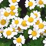
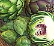
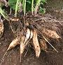
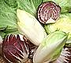
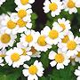
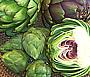
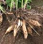

SAFARI
Users
Lettuce & Chicory
Leafy Greens and Roots

Herbs & Vegetables
Leaves, Stems & Flowers

Thistles
Artichokes, Cardoons, Others.

Seeds, Roots & Oils
Sunflowers, etc.
The Daisy Family (Asteraceae (was Compositae)) is also known as the Aster family or Sunflower family. This huge family vies with orchids for title as the largest flowering plant family, but Daisies are far more important as food. Daisies provide summer greens, herbs, seeds, cooking oils, edible roots and both edible and decorative flowers.
All the daisies have flower heads consisting of a disk of tiny
flowers, from dozens to thousands, which may or may not be surrounded
by a ring or multiple rings of petals. Each of the tiny flowers in the
disk will produce a tiny dry fruit containing a seed.
|
SAFARI Users |
|

Lettuce & ChicoryLeafy Greens and Roots  Herbs & VegetablesLeaves, Stems & Flowers  ThistlesArtichokes, Cardoons, Others.  Seeds, Roots & OilsSunflowers, etc. |